Three lecturers' rules carry into Exam 2. None of them is new; all of them change how you study.
| The rule | What it means for you |
|---|---|
| “I’m not going to just throw a random number at you and not give you context of whether that’s high or low.” (Professor Reynolds, Lecture 1) | Reference ranges are supplied. A troponin, a triglyceride or a C-reactive protein in a stem will come with the limit that reads it. Learn what a value means. |
| “Although a heart rhythm can be a diagnosis, you also need to be able to interpret an EKG (electrocardiogram) by naming the rhythm.” (Lecture 1) | Electrocardiography is the one place where naming the finding is fair game. Lecture 7 is the foundation for that: paper, leads, rate, intervals. |
| Questions are vignette and next-best-test: “what would be the next test that you would order?” | Lecture 8 is built for exactly this. Know what each modality can and cannot show, and what you do when a study is equivocal. |
7 · Principles of Electrocardiography
Ayelet Elwaya, MSHS, PA-C, CAQ-EM · 15 September 2026
Instructional Objectives
Topic Outline 7: Principles of Electrocardiography
- Describe action potentials and impulse conduction through the cardiac conduction system.
- Define depolarization and repolarization.
- Define absolute and relative refractory periods.
- Describe the fundamental principles of electrocardiography, including: i. Time · ii. Voltage · iii. Vectors · iv. Bipolar leads · v. Unipolar leads
- Identify the standard limb and precordial leads and their proper anatomical placement.
- Determine heart rate using an electrocardiogram.
- Measure and interpret: i. PR interval · ii. QRS duration · iii. QT interval · iv. QTc interval
- Identify normal electrocardiographic intervals and waveforms.
| She said | So |
|---|---|
| “I will not be testing you on calcium channels and funny sodium channels and all that good stuff because you’ve done that in physiology.” But an electrolyte she uses on a slide “is” fair game. | Know which ion moves in each phase, not the channel subtypes. |
| “Yes, you need to know what happens in each phase.” | The five-phase table in 7.1 is examinable as written. |
| The refractory periods are “very important from now until forever.” | They explain R-on-T, P-on-T and why a prolonged QTc is dangerous. |
| Lead placement: “I am sorry, you do have to memorize this.” And bipolar versus unipolar, precordial versus limb: “you have to know the distinction.” | 7.4 and 7.5 are memorization, not reasoning. |
| “It’s very important that you know how to identify the J point.” | ST elevation is measured from it (see 7.7). |
| Bazett’s formula: “please do not memorize. I will never ask you about the formula.” The bifascicular-block aside: “I will not ask you this on the test.” | Know that the QTc is the rate-corrected QT and its thresholds, not how it is computed. |
7.1 · Objective a — The action potential and the conduction system
Four properties make a cardiac cell a cardiac cell: automaticity (it produces its own impulse), excitability (it responds to an impulse or stimulus), contractility (it contracts) and conductivity (it passes the impulse from myocyte to myocyte).
The action potential is a rapid change in voltage across the cell caused by ion movement. It has five phases, and the sequence starts at phase 4: 4 → 0 → 1 → 2 → 3.
| Phase | Name | What happens |
|---|---|---|
| 4 | Resting state (diastole) | Cell is ready to respond. More potassium inside; sodium and calcium outside. Inside voltage −90 mV. |
| 0 | Upstroke (depolarization) | Fast sodium channels open; rapid sodium influx makes the inside positive. |
| 1 | Early repolarization | Sodium channels close and potassium channels reopen; a slight negative shift. |
| 2 | Plateau | Calcium enters, causing contraction, balanced by potassium moving the other way, so the voltage holds level. |
| 3 | Rapid repolarization | Calcium channels close; potassium channels stay open; the inside returns to −90 mV. |
A slide and its own figure disagree on direction. The text of slides 9 and 10 describes potassium as moving into the cell during phases 2 and 3. The figure on the same slides (below) labels it potassium efflux, which is the physiology: potassium leaves the cell to repolarize it. Learn it as potassium out, calcium in, during the plateau.
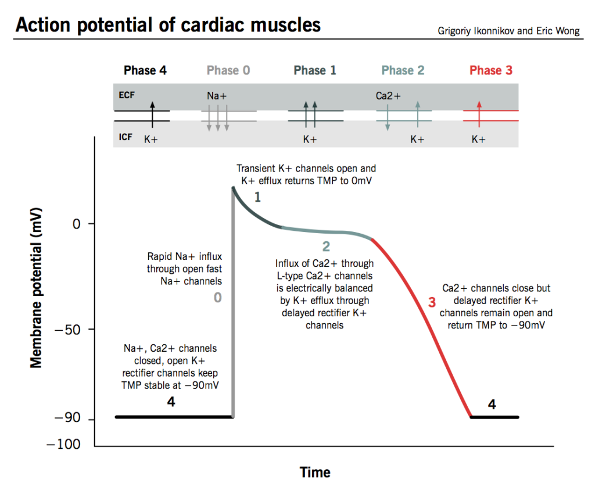
The conduction system
A network of specialized muscle cells that generate and spread the signal so the heart beats in a coordinated rhythm. Each level can take over pacing if the one above fails, at a slower intrinsic rate.
| Structure | Where | Key facts | Intrinsic rate |
|---|---|---|---|
| Sinoatrial node | Upper wall of the right atrium, just below the vena cava opening | Main pacemaker. Three internodal pathways to the atrioventricular node: superior anterior (fast, used by the majority), middle, and inferior posterior (slow). The other two usually terminate before reaching the atrioventricular node. | 60–100 per minute |
| Atrioventricular node | Junction of atria and ventricles, near the coronary sinus | Introduces a short pause and amplifies the signal. Back-up pacemaker if the sinoatrial node fails. | 40–60 per minute |
| Bundle of His | Crosses the nonconductive atrioventricular septum | In a normal heart, the only electrical pathway from atria to ventricles. | — |
| Left bundle branch | Into the left ventricle | Splits into three fascicles: left posterior, intraventricular septal, and left anterior (which becomes the Purkinje network). | — |
| Right bundle branch | Into the right ventricle | Much longer than the left despite the smaller ventricle; terminates in the Purkinje network. | — |
| Purkinje network | Ventricular walls | Third pacemaker if both nodes fail. Conducts faster and more efficiently than any other part of the system. | 20–40 per minute |
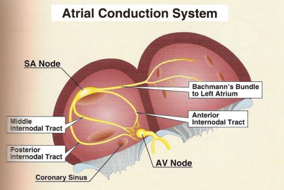
A bifascicular block is not the same as a left bundle branch block (slide 16). She said this will not be tested beyond that distinction.
The cardiac vector is the arrow showing the direction and strength of current at any moment. The true pathway of conduction is left and down, toward the anterior chest.
7.2 · Objective b — Depolarization and repolarization
| Depolarization | Repolarization | |
|---|---|---|
| Membrane | Becomes less negative | Returns toward its resting state |
| Represents | Activation (excitation) of cardiac tissue | Recovery of the cells |
| Timing | Precedes contraction | Follows it |
| On the tracing | P wave (atria), QRS complex (ventricles) | T wave (ventricles) |
7.3 · Objective c — Absolute and relative refractory periods
| Absolute refractory period | Relative refractory period | |
|---|---|---|
| Definition | The cell will not respond to another stimulus | The cell will respond to a second stimulus, but it is very fragile |
| Span | Phase 0 to mid phase 3 | Mid phase 3 to the end of phase 3 |
| Duration | Typically about 180 ms | — |
| On the tracing | The peak of the T wave is the dividing line between the two. | |
Why it matters. A beat that lands in the relative refractory period, before the previous one has finished, is the mechanism behind the dangerous patterns you will meet later: R on T, P on T and a prolonged QTc are all risk factors for a beat hitting before the last one ended.
7.4 · Objective d — Time, voltage, vectors, bipolar and unipolar leads
An electrocardiogram is a visual representation of cardiac electrical activity over time. The direction of current is compared with a stationary electrode: a positive overall vector gives an upward deflection, a negative one a downward deflection, and a net zero traces only the isoelectric line.
| Axis | Small box | Large box (5 small) | Other |
|---|---|---|---|
| Time (left to right) | 0.04 seconds | 0.2 seconds | 5 large boxes = 1 second. Strips are usually 3 or 6 seconds. |
| Voltage (up and down) | 1 mm = 0.1 mV | 5 mm | Standard calibration: 10 mm (two large boxes) = 1 mV. |
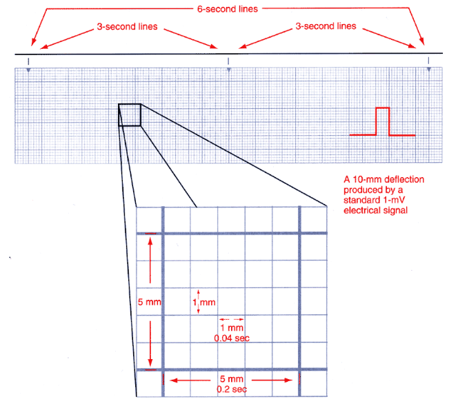
| Lead type | What it measures | Which leads |
|---|---|---|
| Bipolar | Voltage difference between two body points, one positive and one negative electrode | Leads I, II, III (Einthoven’s triangle: both shoulders and the left lower extremity) |
| Unipolar | Activity from one electrode reference point | aVR, aVL, aVF (augmented: one physical lead plus a theoretical negative pole created by the machine) and V1–V6 |
| An electrocardiogram CAN tell you | It CANNOT tell you |
|---|---|
| Whether there is electrical activity · conduction problems · rate · rhythm · where the impulse originates · how much electricity is conducted | Hemodynamic status · cardiac output · whether the patient has a pulse |
7.5 · Objective e — Limb and precordial leads and their placement
Every lead is a different point of view. A standard 12-lead uses 10 physical electrodes: four limb electrodes (right arm, left arm, left leg, plus right leg) and six chest electrodes. The four limb electrodes produce six leads — I, II, III, aVR, aVL, aVF — the hexaxial leads, used to determine the axis. Add V1–V6 and you have twelve views from ten wires.
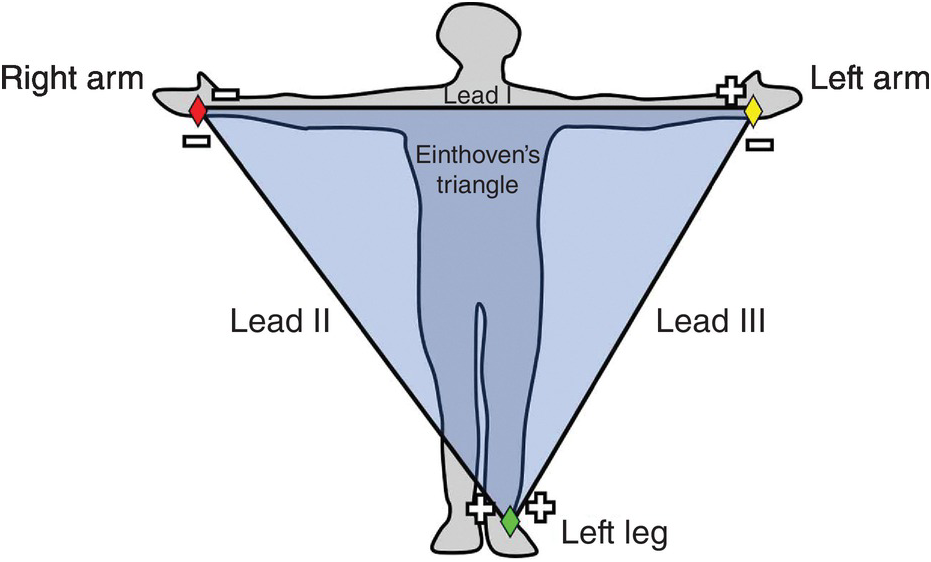
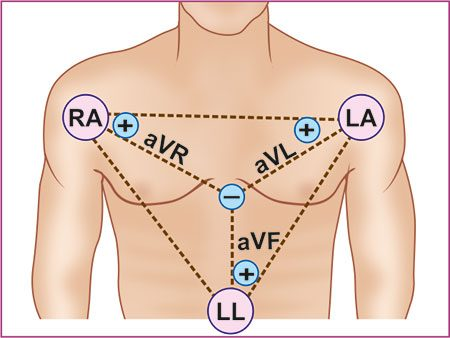
The precordial (chest) leads give a horizontal view of the heart, with very specific placement:
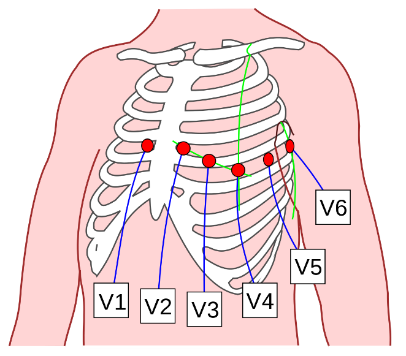
Lead II has the best view of the heart’s vector, so it is the lead used for rhythm interpretation. The cardiac cycle looks different in other leads.
Contiguous leads look at the same area of the heart: V1, V2, V3, V4 · II, III, aVF · I, aVL, V5, V6.
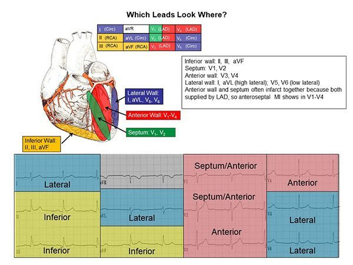
7.6 · Objective f — Determining heart rate
Both methods only work if the rhythm is regular, so check regularity first: compare consecutive R to R intervals, with calipers or a marked sheet of paper if in doubt.
| Method | How |
|---|---|
| 6-second method | Take a 6-second strip (two 3-second markers, or 30 large boxes). Count QRS complexes and multiply by 10 for the ventricular rate; count P waves and multiply by 10 for the atrial rate. |
| 300 method | Start at an R wave on a heavy line. Each following heavy line counts down: 300, 150, 100, 75, 60, 50. The next R wave’s position gives the rate. |
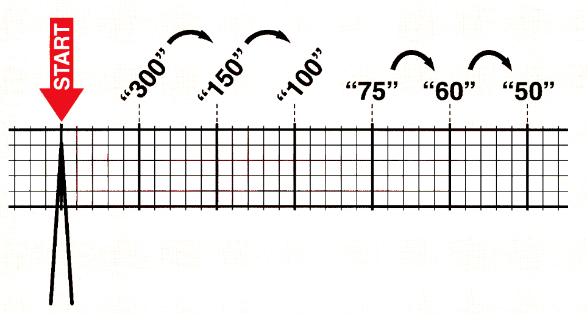
7.7 · Objectives g & h — Waves, segments, intervals and their normal values
A wave is a deflection from baseline; a segment is the flat line between two waves; an interval spans at least one wave plus one segment. The QRS is the one complex.
| Component | Represents | Normal |
|---|---|---|
| P wave | Atrial depolarization | Under 0.12 s (3 small boxes); upright in lead II |
| PR interval | Start of P to start of QRS: atrial depolarization, the atrioventricular node delay and His-Purkinje conduction | 0.12–0.20 s (3–5 small boxes) |
| QRS complex | Ventricular depolarization | Under 0.12 s; narrow with sharp points. Not every wave appears in every lead. |
| Q wave | Septal depolarization (first negative deflection after the PR) | Under 0.04 s, low amplitude; not always visible |
| R wave | Anterior left ventricle (first positive deflection) | — |
| S wave | Lateral left ventricle (first negative deflection after R) | Must go below baseline to be a true S wave |
| J point | Junction where the QRS ends and the ST segment begins | At baseline; 1 mm variance allowed |
| ST segment | Between ventricular depolarization and repolarization; ventricles hold contraction | At baseline |
| T wave | Ventricular repolarization | 0.16–0.25 s; its peak divides absolute from relative refractory period |
| QT interval | All ventricular activity: start of QRS to end of T | 350–450 ms in males, 360–460 ms in females |
| QTc | QT corrected for heart rate (Bazett’s formula, computed by the machine) | Same values as the QT. Above 450 (460 in women) to 500 ms = borderline or prolonged; above 500 ms = high-risk prolongation |
| U wave | Unclear; possibly Purkinje repolarization. Follows T in the same direction; best in V2–V3 | Prominent in hypokalemia, hypercalcemia, prolonged QT, post-infarction |
| TP segment | Resting state between T and the next P | The best place to judge the isoelectric line |
| R to R interval | Distance between consecutive R waves | Used for rate, regularity and heart blocks |
8 · Cardiac Imaging and Vascular Studies
Ayelet Elwaya, MSHS, PA-C, CAQ-EM · 17 September 2026
Instructional Objectives
Topic Outline 8: Cardiac Imaging and Vascular Studies
- Identify cardiovascular anatomy on radiographic studies.
- Identify structures comprising the cardiac silhouette.
- Identify common abnormal cardiovascular imaging findings.
- Measure the cardiothoracic ratio to evaluate cardiac enlargement.
- Compare and contrast cardiovascular imaging modalities.
- Discuss indications, advantages, and limitations of: i. Echocardiography · ii. Stress testing · iii. Nuclear cardiology studies · iv. Cardiac CT · v. Cardiac MRI · vi. Coronary angiography · vii. Vascular ultrasound
| She said | So |
|---|---|
| The gold standard to diagnose coronary artery disease — “that was a high-miss last year” — is “to put a catheter in the coronary artery.” | Coronary angiography is the gold standard, even though a computed tomography angiogram can show the calcification. |
| “If I give you a test question about someone who needs an echo to see their left atrial appendage” and they have a history of esophageal stricture, “scratch that answer out.” | Know the transesophageal echocardiogram contraindications, and what the transthoracic study cannot see. |
| “I do want you to remember that your predicted heart rate is 220 minus your age.” | And that a valid test reaches 85% of it. How the numbers were derived is not needed. |
| A patient who “couldn’t hit” their target heart rate and stopped early without chest pain: “What is the next best step … A cardiac CTA (computed tomography angiogram)!” | An equivocal or non-diagnostic stress test is an indication for coronary computed tomography angiography. |
| “The main indication for a left heart cath is to visualize your coronary arteries — take a highlighter, circle it — the main reason you would want to do a right heart cath is for people you are assessing for pulmonary hypertension.” | One indication each, circled. |
| After a positive computed tomography angiogram with left anterior descending disease, the next step is the catheter, “because intervention is done according to percentage.” | Noninvasive tests say whether disease is there; angiography says how much. |
| On the exercise endpoint chart: “Do not memorize” the order, “but understand what this chart is saying … these are indications to stop the test.” The treadmill protocol tables are not for memorizing. | Know why a test is stopped, not the table layout. |
8.1 · Objectives a & b — Cardiovascular anatomy and the cardiac silhouette
The chest radiograph is not the primary modality for cardiac function or detailed anatomy, but when one is obtained it gives important clues. Partially visible: the cardiac silhouette, great vessels, pulmonary vasculature, and lungs and pleura.
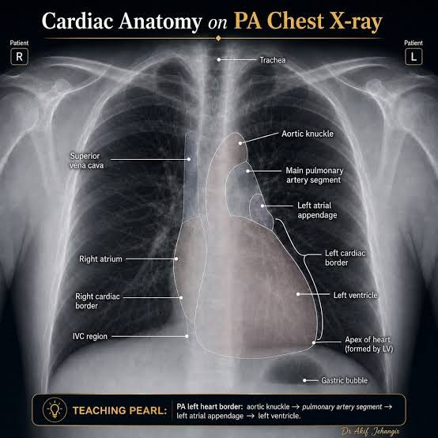
| Border | Structures, top to bottom |
|---|---|
| Right heart border | Superior vena cava → right atrium (inferior vena cava region at the base) |
| Left heart border | Aortic knuckle (arch) → main pulmonary artery → left atrial appendage → left ventricle → apex |
8.2 · Objective c — Common abnormal findings
Chest radiograph abnormalities that can indicate cardiac pathology:
| Finding | Note |
|---|---|
| Pulmonary edema · pleural effusion | The heart shows itself through the lungs |
| Cardiomegaly | Judged by the cardiothoracic ratio (8.3) |
| Cephalization | Upper-lobe vessels become larger and more prominent than the lower ones. Seen in heart failure and pulmonary hypertension. |
| Calcification | Great vessel, valvular, or pericardial |
| Tension physiology | Pneumothorax causing tamponade |
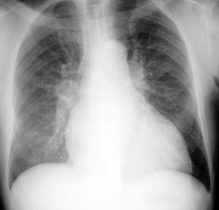
8.3 · Objective d — The cardiothoracic ratio
Widest cardiac diameter divided by the widest internal thoracic diameter. Normal 0.42–0.5. A ratio above 0.50 on a properly performed posteroanterior film suggests cardiomegaly — the silhouette should occupy no more than about half the thoracic width.
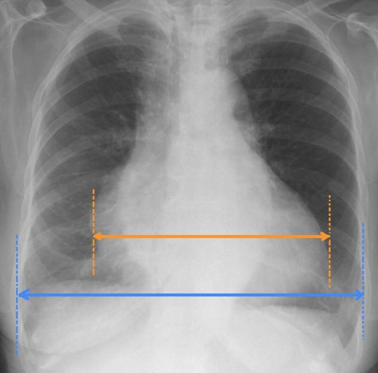
8.4 · Objective e — Comparing the modalities
| Modality | Best at | Cannot / against |
|---|---|---|
| Chest radiograph | Clues when already obtained: silhouette, vessels, lungs | Not for function or detailed anatomy |
| Vascular ultrasound | Vessels and flow, no radiation, portable, repeatable | Operator dependent; habitus, bone and air limit it; deep vessels hard |
| Echocardiography | Structure and function together, bedside | Transthoracic view poor for the posterior heart; transesophageal is invasive |
| Stress testing | Inducible ischemia and functional capacity | Invalid if 85% of predicted maximum is not reached |
| Nuclear perfusion | Ischemia versus viability; more accurate than standard or echo stress | Radiotracer |
| Cardiac computed tomography and angiography | Anatomy, calcium, noninvasive coronary assessment; superior resolution to echo | Anatomy only, not function; radiation, contrast, rate dependent, blooming |
| Cardiac magnetic resonance | Detailed anatomy and function, viability, inflammation; no ionizing radiation or iodinated contrast | Implants, long acquisition, claustrophobia |
| Coronary angiography | Gold standard for coronary anatomy; can treat during the study | Invasive: hematoma, pseudoaneurysm |
8.5 · Objective f.i — Echocardiography
Noninvasive evaluation of chamber size, atrial and ventricular function and wall thickness, ejection fraction, blood flow and velocity with Doppler, valve structure and function, and intracardiac shunts, hemodynamics and pressures.
| TTE (transthoracic echocardiogram) | TEE (transesophageal echocardiogram) | |
|---|---|---|
| Transducer | Outside the body, on the chest wall | Inside, on a modified endoscope in the esophagus |
| Use | Most common; bedside and noninvasive | When more structural detail is needed, particularly the inferior and posterior heart |
| Procedure | Left lateral decubitus, gel, probe over several windows | Left lateral decubitus; topical anesthetic to the throat; intravenous sedative; electrocardiogram and vital-sign monitoring; patient may swallow to pass the probe |
The transesophageal study sees in more detail: left atrium, mitral valve, pulmonary artery, aorta, coronary arteries. When to use it: aortic and great-vessel disease (dissection, dilation, arteritis), cardiac tumor (myxoma), prosthetic valve function, valve vegetations, cerebral ischemia, and left atrial appendage thrombus.
TEE (transesophageal echocardiogram) contraindications — anything the probe could injure or an airway you cannot protect: altered mental status or an uncooperative patient · esophageal stricture, malignancy, or varices with recent bleeding · odynophagia or dysphagia history · Zenker’s diverticulum (identify with a swallowing study first) · cervical spine arthritis with reduced range of motion · obstructive sleep apnea or airway risk.
8.6 · Objective f.ii — Stress testing
Four types: standard exercise, echocardiography, nuclear, and pharmacologic.
The exercise tolerance test assesses functional capacity and indirectly detects ischemia through continuous electrocardiogram monitoring — ST depression or new premature ventricular contractions. Treadmill or stationary cycle (bicycle preferred; arm ergometry exists), run to a protocol, usually Bruce. Complications: arrhythmia, angina, infarction, death.
Validity. The patient must reach at least 85% of predicted maximal heart rate, where predicted maximum = 220 minus age. Below 85%, an otherwise negative test is inadequate to exclude ischemic heart disease.
| Indications | Procedure |
|---|---|
| Symptoms suggesting ischemia (exertional chest pain) · acute chest pain once acute coronary syndrome and infarction are excluded · known ischemic disease with a change in status · prior revascularization · new heart failure or cardiomyopathy · certain arrhythmias · preoperative assessment of a high-risk patient before non-cardiac surgery | Resting electrocardiogram and blood pressure (supine and standing) → exercise increased by metabolic equivalents → blood pressure in the last minute of each stage → watch face, color, tracing and pressure → stop at maximum performance, ischemic signs or symptoms, or a predetermined endpoint |
![Table titled Exercise test endpoints, divided into patient-determined endpoints such as wanting to stop, chest discomfort and severe dyspnea; provider-determined endpoints including looking unwell, exertional hypotension, systolic pressure above 250 or diastolic above 120 millimeters of mercury, and electrocardiogram endpoints such as marked ST depression, new bundle branch block, high-grade atrioventricular block, ventricular tachycardia or fibrillation, increasing ectopy and supraventricular tachyarrhythmia; equipment failure; and protocol-determined endpoints.](pdm-exam-2-study-guide-images/8-exercise-endpoints.png)
| Variant | For whom | Key point |
|---|---|---|
| Echocardiography stress | Can exercise, but baseline electrocardiogram abnormalities (ST-T changes) would confuse interpretation | Echo immediately after exercise, while the heart is still fast, looking for new wall-motion abnormality |
| Pharmacologic stress | Cannot exercise (for example wheelchair dependent) | Adenosine or dipyridamole vasodilate the coronaries; dobutamine increases cardiac workload |
8.7 · Objective f.iii — Nuclear cardiology
A small amount of radioactive perfusion tracer is injected and taken up by the heart. It assesses ischemia, myocardial blood flow, pumping function, and the size and location of an infarction.
Myocardial perfusion imaging pairs rest images with images after exercise or pharmacologic stress (adenosine, dobutamine), read by a gamma camera (single-photon emission computed tomography) or positron emission tomography. Diseased myocardium receives less flow under stress, so less tracer uptake after stress means a blockage or vasospasm. Tissue that does not light up at all is dead — which is how it shows viability.
8.8 · Objective f.iv — Cardiac CT (computed tomography) and CT angiography
Computed tomography optimized for the heart, coronaries, chambers, valves, pericardium and great vessels. Coronary computed tomography angiography evaluates the coronary arteries; non-contrast cardiac computed tomography is used for coronary artery calcium scoring. Because the heart moves, metoprolol slows it and nitroglycerin dilates the coronaries, and the scan is gated to the electrocardiogram.
| Computed tomography angiography indications | Cardiac computed tomography indications |
|---|---|
| Chest pain: presence and distribution of coronary disease · detect or exclude stenosis or plaque · equivocal or non-diagnostic stress test | Coronary calcium · coronary anatomy anomalies · congenital heart disease · preoperative planning (valves, great vessels); usually done right before a computed tomography angiogram |
| Advantages | Disadvantages |
| Superior resolution to echocardiography · internal structures · noninvasive coronary assessment · fast | Radiation · contrast (kidney disease) · rhythm and rate dependent · blooming artifact overstates calcification · anatomy only, not function |
8.9 · Objective f.v — Cardiac MRI (magnetic resonance imaging), now cardiovascular magnetic resonance
Magnetic fields and radiofrequency map hydrogen into three-dimensional images of the heart and great vessels, with very detailed anatomy. It assesses anatomy (mainly muscle), ventricular function, great vessels, coronary anatomy, flow, viability, perfusion and inflammation — without ionizing radiation or iodinated contrast.
An echocardiogram is done before it is ordered. Indications: thoracic aorta (aneurysm, dissection, intramural hematoma, coarctation) · congenital heart disease (coronary anomalies, shunt quantification) · cardiomyopathies (hypertrophic, ischemic versus nonischemic, acute myocarditis, sarcoidosis) · left ventricular viability.
![Table titled Advantages and disadvantages of cardiac magnetic resonance imaging. Advantages: three-dimensional, high spatial and temporal resolution, intrinsic high contrast with no need for iodinated contrast, no ionizing radiation, no interference from lung or bone, multiple techniques in one system. Disadvantages: contraindicated with certain implants such as aneurysm clips, nerve stimulator units and certain pacemakers, lengthy acquisition, distorted electrocardiogram, requires electrocardiogram and respiratory gating, claustrophobia.](pdm-exam-2-study-guide-images/8-cmr-advantages.png)
8.10 · Objective f.vi — Coronary angiography and the invasive studies
Coronary angiography gives detailed images of the coronary vessels and is the gold standard for coronary anatomy, usually done with cardiac catheterization and before percutaneous or surgical intervention. Under local anesthesia and sedation, a catheter is guided by fluoroscopy, pressures are measured, contrast is injected into each coronary artery, and treatment can be done in the same procedure (balloon angioplasty or stent).
| Left heart catheterization | Right heart catheterization |
|---|---|
| Via an artery. Main use: the coronary arteries. Also aortic pressure, systemic vascular resistance, aortic and mitral valves, left ventricular pressure and function. | Via a vein. Main use: pulmonary hypertension. Right atrial, right ventricular, pulmonary artery and occlusion pressures, pulmonary vascular resistance, tricuspid and pulmonic valves, shunts. |
Indications: to define a suspected problem when intervention is anticipated · to exclude significant disease when other studies are equivocal or symptoms are severe · high risk on noninvasive testing · angina despite therapy · unstable angina · acute infarction · high-risk non-cardiac surgery · arrhythmia suspected to be vascular.
Complications at the access site — always check it: hematoma, and pseudoaneurysm (continuous communication with the artery; pulsatile).
Electrophysiology testing investigates and treats rhythm disorders: 3–4 catheters via the internal jugular, subclavian or femoral vein into the right heart record and provoke the arrhythmia to find its exact origin, and catheter ablation can treat it. Indications: syncope with structural heart disease or sick sinus syndrome, unexplained sudden cardiac arrest, ectopic beats, aberrant pathways.
8.11 · Objective f.vii — Vascular ultrasound
Quartz crystals in the transducer send high-frequency sound; reflections become a grayscale image, superficial structures at the top. Denser is lighter (air black, bone white). Vessels appear as well-circumscribed hypoechoic or anechoic structures. On compression, veins collapse and arteries pulsate — a vein that will not collapse is the positive deep vein thrombosis study.
| Indications | Advantages | Disadvantages |
|---|---|---|
| Vascular access · venous flow with Doppler; deep vein thrombosis · arterial: claudication and peripheral arterial disease · carotid: atherosclerosis, after stroke, transient ischemic attack or infarction · abdominal aortic aneurysm · venous insufficiency and varicose veins | Fast · cost effective · no ionizing radiation · noninvasive · real time · anatomy and flow · portable · repeatable | Highly operator dependent · body habitus · bone and air interfere · better for superficial vessels · probe angle affects measurements · calcification causes acoustic shadowing |
9 · Cardiac Biomarkers and Lipid Testing
Lauren Reynolds, MSPA, PA-C · 21 September 2026
Instructional Objectives
Topic Outline 9: Cardiac Biomarkers and Lipid Testing
- Compare and contrast cardiac biomarkers: i. Creatine kinase · ii. Cardiac troponins · iii. BNP · iv. hs-CRP
- Discuss indications for ordering cardiac biomarkers.
- Discuss indications for ordering a lipid profile.
- Analyze a lipid profile.
- Discuss the use of lipid testing for cardiovascular risk assessment.
- Compare and contrast lipids and lipoproteins involved in atherosclerotic disease.
- Describe measured and calculated lipid profile components.
The one-line frame for the whole lecture. Cardiac biomarkers ask “is there acute cardiac injury or stress?” Lipids ask “what is the patient’s long-term atherosclerotic risk?” A 58-year-old with exertional chest pain gets biomarkers; a 58-year-old at a routine physical with abnormal cholesterol gets a lipid workup.
Numbers: every threshold below is here so you can read a result, not to memorize — reference ranges are supplied on her exams. The recording of this lecture was still being transcribed when this section was written, so it is built from the slides alone.
9.1 · Objective a — Creatine kinase, troponins, BNP (B-type natriuretic peptide) and hs-CRP (high-sensitivity C-reactive protein)
| Biomarker | Reflects | Source | Key use | Watch for |
|---|---|---|---|---|
| Creatine kinase (and its MB fraction) | Muscle injury; MB more cardiac | Cytosolic enzyme of skeletal and cardiac muscle | Largely historical for infarction; still used for rhabdomyolysis and statin myopathy | Low cardiac specificity; no longer useful for infarction when troponin is available |
| Cardiac troponin (I, T, high-sensitivity) | Myocardial injury/necrosis | Contractile regulatory proteins released with myocyte injury | Preferred marker for infarction; risk stratification | Most sensitive and specific cardiac marker, but rises in many non-infarction states (heart failure, pulmonary embolism, myocarditis, chronic kidney disease, sepsis) |
| BNP (B-type natriuretic peptide) / NT-proBNP (N-terminal pro B-type natriuretic peptide) | Wall stretch/stress | Ventricles, with volume or pressure overload | Diagnose and triage heart failure; prognosis in acute coronary syndrome | Raised by age, atrial fibrillation, renal impairment; suppressed by obesity |
| hs-CRP (high-sensitivity C-reactive protein) | Vascular/systemic inflammation | Acute-phase reactant from the liver | Adjunct risk marker for atherosclerotic disease | Non-specific; confounded by any inflammatory or infectious state |
Troponin
Definition of acute infarction (Fourth Universal Definition): evidence of myocardial injury with troponin I or T above the 99th percentile upper reference limit, in the appropriate setting of ischemic symptoms. That limit is a value higher than 99% of a healthy population; exceeding it signals cardiac muscle damage and the need for further testing. Defining “healthy” is debated, but sex-specific limits are generally agreed.
| Subunit | Role | As a biomarker |
|---|---|---|
| Troponin T | Tropomyosin-binding | Primarily cardiac; trace amounts in skeletal muscle |
| Troponin I | Inhibitory | Cardiac specific |
| Troponin C | Calcium-binding | Not useful — not specific to cardiac muscle |
High-sensitivity troponin describes the assay, not a new subunit. It detects troponin at lower concentrations, allows serial testing at presentation and 1–2 hours, detects infarction up to 90 minutes earlier, and gives faster rule-in and rule-out. Pitfall: so sensitive that healthy people can have measurable levels — interpret with the whole clinical picture.
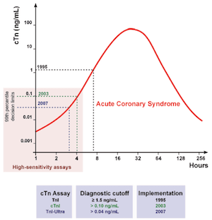
Injury versus infarction
Myocardial injury = any troponin elevation. Myocardial infarction = injury plus ischemia plus a rising or falling pattern. Troponin can be chronically elevated in chronic kidney disease, heart failure and structural heart disease — never interpret a single value out of context.
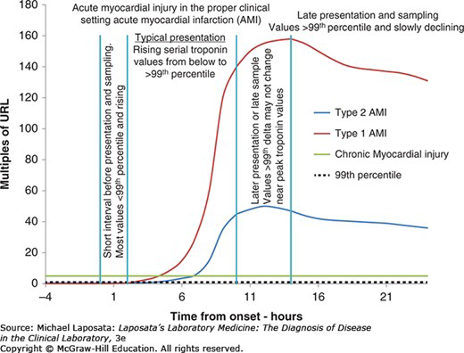
Advantages over creatine kinase-MB: very high specificity for myocardial injury, earlier rise and longer elevation (a wider window for diagnosis and treatment), useful early risk stratification in unstable angina. No longer used for cardiac evaluation: creatine kinase-MB, myoglobin, lactate dehydrogenase.
The natriuretic peptides
Cardiomyocytes secrete pro-BNP in response to stretch; it is cleaved into active BNP (B-type natriuretic peptide) and inert NT-proBNP (N-terminal pro B-type natriuretic peptide). Neither is 100% specific for heart failure; neither is a stand-alone test — use with clinical assessment and an echocardiogram if indicated.
| Factor | Effect on natriuretic peptide |
|---|---|
| Age | Rises by decade |
| Sex | Women higher |
| Obesity | Falsely low |
| Renal function | Inverse with filtration rate: worse kidneys, higher level |
Reference ranges vary by assay (BNP cutoff is given as under 100 ng/L; NT-proBNP is age-stratified and based on renal function). Levels rise linearly with heart failure severity.
C-reactive protein
Rises quickly with inflammation and falls rapidly once it resolves. Raised by acute processes (plaque rupture, trauma), chronic ones (atherosclerosis, heart failure, acute coronary syndrome, autoimmune disease, diabetes, insomnia, obesity, cancer), mildly in women, older adults and smokers, and highest in bacterial infection. Lowered by NSAIDs (nonsteroidal anti-inflammatory drugs), statins, interleukin-6 receptor antagonists, GLP-1 (glucagon-like peptide-1) agonists and lifestyle change. Benefits: cheap, non-invasive, widely available including point of care, well researched, predictive. Pitfall: not cardiac specific.
| C-reactive protein (general) | Typical meaning |
|---|---|
| Under 0.3 mg/dL | Normal |
| 0.3–1.0 mg/dL | Normal or minor: obesity, pregnancy, diabetes, common cold, sedentary life, smoking |
| 1.0–10.0 mg/dL | Moderate: rheumatoid arthritis, lupus, autoimmune disease, malignancy, infarction, pancreatitis, bronchitis |
| Above 10.0 mg/dL | Marked: acute bacterial or viral infection, vasculitis, major trauma |
| Above 50.0 mg/dL | Severe: generally acute bacterial infection |
High-sensitivity C-reactive protein is a technique, not a different test: more precision at low levels, designed for healthy people, used for cardiovascular risk stratification. Level is directly proportional to risk; high levels are an independent risk factor for heart failure and cardiac mortality. Risk tiers (note the unit is mg/L): under 1 low · 1–3 moderate · above 3 high. It feeds the Reynolds Risk Score, a 10-year cardiovascular risk estimate for women over 45 (slide 21).
9.2 · Objective b — Indications for ordering cardiac biomarkers
| Situation | Order |
|---|---|
| Suspected acute coronary syndrome / acute chest pain | Serial high-sensitivity troponin, first-line; look for a rising or falling pattern. The first value also carries prognostic weight. |
| Suspected heart failure / dyspnea triage | BNP (B-type natriuretic peptide) or NT-proBNP; also prognostic after acute coronary syndrome |
| Skeletal muscle injury, statin myopathy, rhabdomyolysis | Creatine kinase (not troponin) |
| Refining atherosclerotic risk in select primary-prevention patients | hs-CRP (high-sensitivity C-reactive protein) — never for acute diagnosis |
| When NOT to order | Routine natriuretic peptides in healthy people; creatine kinase-MB or myoglobin for infarction |
Troponin applications: unstable angina (normal = no injury; raised = injury, so stratify and consider revascularization) · early rule-out and early rule-in, including small infarctions · risk stratification in acute coronary syndrome · infarct size (late elevation at 4 weeks is inversely related to left ventricular ejection fraction) · reocclusion and reinfarction · procedural infarction.
| Procedural infarction | Troponin criterion |
|---|---|
| Type 4a (percutaneous coronary intervention) | More than 5 times the 99th percentile limit |
| Type 4b | At least one value above the 99th percentile limit |
| Type 5 (coronary artery bypass grafting) | More than 10 times the 99th percentile limit |
Natriuretic peptide applications: rule-out of new heart failure · guiding therapy · monitoring the course · risk stratification (cardiovascular mortality, readmission).
9.3 · Objective c — Indications for ordering a lipid profile
Why: baseline documentation, atherosclerotic risk estimation, and guiding or monitoring lipid-lowering therapy — in nearly all adults.
| Question | Answer |
|---|---|
| Fasting or not? | Nonfasting is acceptable for most. Fasting when triglycerides are 400 mg/dL or above, a triglyceride disorder is known or suspected, or there is a family history of premature atherosclerotic disease or genetic dyslipidemia. |
| Children | Screen at ages 9–11; from age 2 with a family history of premature disease, severe hypercholesterolemia or familial hypercholesterolemia |
| Adults | Again at 19, then roughly every 5 years, more often with risk factors |
| On therapy | Recheck 4–12 weeks after starting or changing a dose, then every 6–12 months |
| Lipoprotein(a) | Measure at least once in all adults |
9.4 · Objective d — Analyzing a lipid profile
| Component | Measured or calculated | Desirable / lower risk | Actionable |
|---|---|---|---|
| Total cholesterol | Measured | Under 200 mg/dL | Very high values raise familial hypercholesterolemia scoring |
| LDL-C (low-density lipoprotein cholesterol) | Calculated | Risk-based goal: under 100, 70 or 55 mg/dL | 190 mg/dL or above: statin regardless of risk; evaluate for familial hypercholesterolemia |
| Non-HDL-C (non-high-density lipoprotein cholesterol) | Calculated | Risk-based goal: under 130, 100 or 85 mg/dL | Tracks with the LDL-C goals |
| HDL-C (high-density lipoprotein cholesterol) | Measured | Higher generally favorable | A marker, not a treatment target |
| Triglycerides | Measured | Under 150 mg/dL | 150+ risk enhancer · 500+ severe, pancreatitis risk · 1000+ extreme |
| ApoB (apolipoprotein B) | Measured | Under 90 (goal under 70 or 55 by tier) | Use with triglycerides 150+, diabetes, or LDL-C under 70 to find residual risk |
| Lipoprotein(a) | Measured once | Under 125 nmol/L (about 50 mg/dL) | 125+ risk enhancer · 250+ about double risk · 430+ comparable to heterozygous familial hypercholesterolemia |
The teaching point on this table: adult LDL-C and non-HDL-C have no single normal value — the goal depends on the patient’s risk tier — whereas triglyceride, apoB and lipoprotein(a) thresholds are more fixed. An elevated lipoprotein(a) is found in about 20% of people, with about 40% higher relative risk. Lipoprotein(a) and apoB share a panel because each lipoprotein(a) particle adds to the apoB count.
The deck states the lipoprotein(a) doubling point two ways. Slide 40: 250 nmol/L (about 100 mg/dL) or above is 2 or more times the risk. Slide 44: about 80–100 mg/dL roughly doubles risk. Neither is worth memorizing, and no question here turns on which is right.
| Pediatric (mg/dL) | Acceptable | Borderline | Abnormal |
|---|---|---|---|
| Total cholesterol | Under 170 | 170–199 | 200 or above |
| Triglycerides, 0–9 years | Under 75 | 75–99 | 100 or above |
| Triglycerides, 10–19 years | Under 90 | 90–129 | 130 or above |
| HDL-C | Above 45 | 40–45 | Under 40 |
| LDL-C | Under 110 | 110–129 | 130 or above |
| Non-HDL-C | Under 120 | 120–144 | 145 or above |
9.5 · Objective e — Lipid testing in cardiovascular risk assessment
Lipid values feed a 10-year atherosclerotic risk estimate — the PREVENT (Predicting Risk of cardiovascular disease EVENTs) equations in the 2026 guideline — and the estimate drives treatment intensity. The framework is Calculate → Personalize → Reclassify.
![Flowchart titled CPR Framework for Risk Evaluation. Estimating 10-year risk with PREVENT splits into low risk under 3 percent, borderline 3 to under 5 percent, intermediate 5 to under 10 percent and high risk 10 percent or above. Every tier discusses the risk estimate and therapy options with the patient; borderline also evaluates risk enhancers. Borderline and intermediate may consider a coronary artery calcium score if there is uncertainty. Low risk ends in lifestyle modification, borderline in lifestyle plus potential lipid-lowering therapy, and intermediate and high in lifestyle and lipid-lowering therapy.](pdm-exam-2-study-guide-images/9-cpr-framework.jpg)
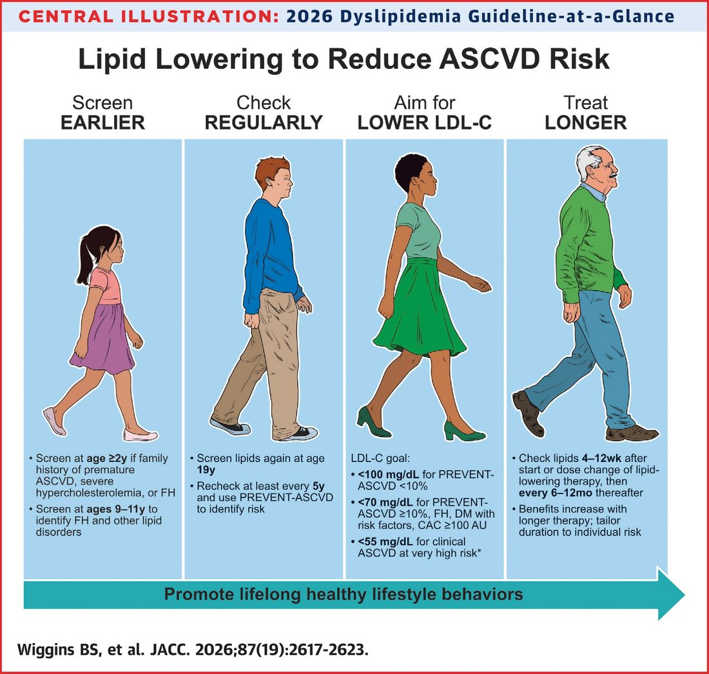
Lipoprotein(a) in risk assessment: a largely fixed genetic factor measured once. Elevation prompts earlier and more intensive management of every other modifiable risk factor — statins do not lower it. ApoB, by contrast, is modifiable and used repeatedly to guide and monitor therapy.
9.6 · Objective f — Lipids and lipoproteins in atherosclerosis
Cholesterol and triglycerides are the major lipids; they are insoluble and travel inside lipoproteins. A lipoprotein = lipid core (cholesterol esters + triglycerides) + phospholipid shell + apolipoproteins.
| Lipoprotein | Main cargo | Apolipoprotein | Atherogenic? |
|---|---|---|---|
| Chylomicron | Dietary triglyceride | apoB-48 | Remnants are |
| VLDL (very low-density lipoprotein) | Triglyceride | apoB-100 | Yes (remnants) |
| IDL (intermediate-density lipoprotein) / remnants | Cholesterol + triglyceride | apoB-100 | Yes |
| LDL (low-density lipoprotein) | Cholesterol | apoB-100 | Yes — principal driver |
| Lipoprotein(a) | Cholesterol + apo(a) | apoB-100 + apo(a) | Highly atherogenic; genetic |
| HDL (high-density lipoprotein) | Cholesterol | apoA-I | No — reverse cholesterol transport (protective) |
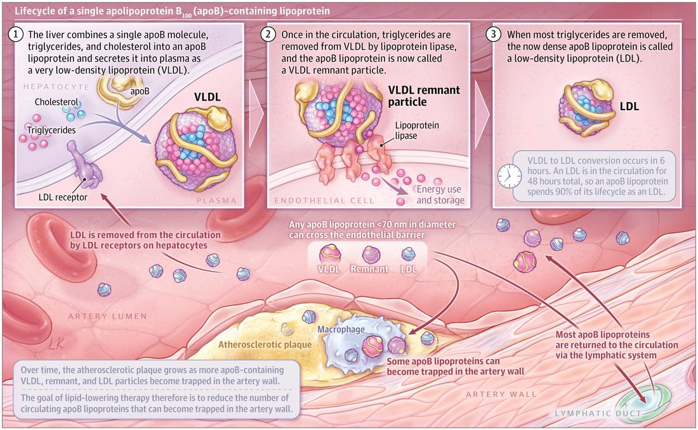
| Apolipoprotein | Made by | Found on / role |
|---|---|---|
| ApoB-48 | Intestine | Chylomicrons |
| ApoB-100 | Liver | VLDL (very low-density), IDL (intermediate-density) and LDL (low-density lipoprotein), and lipoprotein(a) — one per particle; not in HDL |
| ApoA-I | Liver and intestine | Major structural protein of all HDL |
| ApoA-II | — | Second most abundant HDL protein; on about two-thirds of HDL |
| ApoC, apoC-III, apoA-V | — | Regulate triglyceride metabolism |
| ApoE | — | Critical in triglyceride clearance |
| Apo(a) | — | Forms lipoprotein(a) |
Lipoprotein(a) is an LDL-like particle with apo(a) bound to apoB-100: more than 90% genetic, stable over life, no fasting, one lifetime measurement generally enough. Repeat is reasonable in women after menopause if the earlier level was borderline. Test anyone with a personal or family history of atherosclerotic disease, with cascade testing through appropriate families. It is statin-resistant and more atherogenic than LDL.
LDL is the major cholesterol carrier and the primary prevention target; LDL-C and risk have a log-linear relationship. Remnant cholesterol and triglyceride-rich lipoproteins carry residual risk.
9.7 · Objective g — Measured and calculated components
| Measured directly | Calculated |
|---|---|
| Total cholesterol, HDL-C, triglycerides (and apoB, lipoprotein(a) when ordered) | LDL-C — an estimate, not a measurement, on a standard panel · non-HDL-C |
| Estimate | How | Note |
|---|---|---|
| Friedewald LDL-C | Total cholesterol − HDL-C − (triglycerides ÷ 5) | Cannot be used when triglycerides are 400 mg/dL or above |
| Martin/Hopkins or Sampson/NIH (National Institutes of Health) | Newer equations | Preferred, especially with triglycerides 150+ or low LDL-C |
| Non-HDL-C | Total cholesterol − HDL-C | Captures every atherogenic apoB lipoprotein; no added cost; a better predictor than LDL-C; recommended for routine reporting |
Worked the way the deck’s own practice slide asks. A panel with total cholesterol 200 mg/dL, HDL-C 50 mg/dL and triglycerides 100 mg/dL: non-HDL-C = 200 − 50 = 150 mg/dL; Friedewald LDL-C = 200 − 50 − 20 = 130 mg/dL. Whether this arithmetic is examinable is not yet confirmed from the recording — she ruled some calculations in (the anion gap) and some out (filtration rate) in earlier lectures.